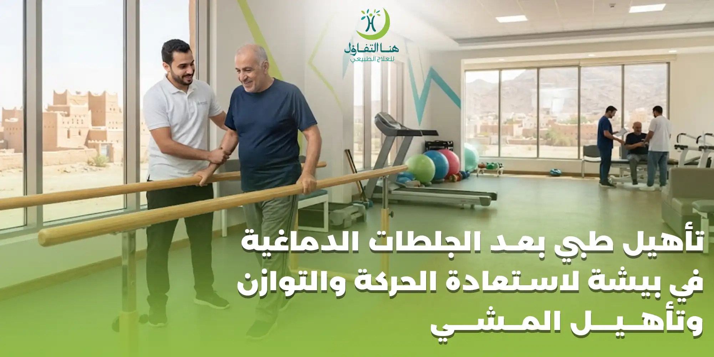

قد تنتهي المرحلة الحادة من الجلطة الدماغية بخروج المريض من المستشفى، لكن رحلة التعافي قد تستمر بعد ذلك لفترة تختلف من شخص إلى آخر. فالجلطة قد تؤثر في الحركة والتوازن والمشي واستخدام الذراع أو الساق، وقد تجعل بعض الأنشطة اليومية التي كانت بسيطة قبل الإصابة أكثر صعوبة.
ولهذا يمثل التأهيل الطبي بعد الجلطات الدماغية جزءًا مهمًا من الرعاية بعد استقرار الحالة، إذ يركز على المشكلات التي تركتها الجلطة وعلى مساعدة المريض في الوصول إلى أفضل مستوى وظيفي ممكن.
وتوصي إرشادات NICE بأن يحصل الأشخاص الذين يحتاجون إلى إعادة تأهيل بعد السكتة الدماغية على رعاية متخصصة، ضمن فريق تأهيل مناسب، كما تعتمد الخطة على احتياجات الشخص وأهدافه وليس على برنامج واحد ثابت للجميع.
وفي حالات تأثر الحركة، يمكن أن يكون العلاج الطبيعي عنصرًا رئيسيًا في البرنامج؛ لأن الجلطة التي تصيب مناطق الدماغ المسؤولة عن الحركة قد تؤدي إلى ضعف أو شلل في أحد جانبي الجسم وصعوبة في أداء الأنشطة اليومية.
ما هي الجلطة الدماغية؟
تحدث السكتة أو الجلطة الدماغية عندما يتأثر وصول الدم إلى جزء من الدماغ، إما بسبب انسداد أحد الأوعية الدموية أو بسبب النزيف.
وبحسب المنطقة المتأثرة وحجم الإصابة، قد تختلف النتائج بصورة كبيرة بين المرضى.
فقد يعاني شخص من ضعف محدود في أحد الأطراف، بينما قد يعاني آخر من مشكلات أكثر وضوحًا في:
- الحركة.
- المشي.
- التوازن.
- استخدام اليد.
- الكلام.
- البلع.
- الإدراك.
- الرؤية.
- القدرة على أداء الأنشطة اليومية.
ولهذا فإن عبارة "مريض جلطة" لا تكفي لتحديد برنامج العلاج الطبيعي؛ فلكل شخص قدرات وصعوبات مختلفة تحتاج إلى تقييم منفصل.
ما المقصود بالتأهيل الطبي بعد الجلطات الدماغية؟
التأهيل بعد الجلطة هو عملية تهدف إلى مساعدة المريض على استعادة أو تحسين الوظائف التي تأثرت قدر الإمكان، إلى جانب تعلم طرق آمنة للتعامل مع الوظائف التي ما زالت محدودة.
ولا يقتصر التأهيل على محاولة جعل المريض يمشي مرة أخرى فقط.
فقد تشمل الأهداف:
- تحسين التحكم في الجذع.
- تحسين الجلوس والتوازن.
- استعادة القدرة على الوقوف.
- تدريب المشي.
- تحسين استخدام الذراع واليد.
- تقوية العضلات المناسبة.
- تحسين القدرة على الانتقال بين السرير والكرسي.
- زيادة القدرة على أداء الأنشطة اليومية.
- تقليل الاعتماد على الآخرين عندما تسمح الحالة.
- تدريب الأسرة على المساعدة بطريقة أكثر أمانًا.
وقد يحتاج المريض إلى أكثر من تخصص؛ فالتأهيل بعد السكتة قد يشمل العلاج الطبيعي والعلاج الوظيفي وعلاج النطق واللغة وخدمات أخرى وفق الوظائف المتأثرة. وتؤكد NICE أهمية الرعاية المنظمة متعددة التخصصات بعد السكتة.
لماذا يعتبر العلاج الطبيعي مهمًا بعد الجلطة؟
قد تؤثر الجلطة في الجزء من الدماغ المسؤول عن التحكم في الحركة، مما قد ينتج عنه ضعف أو شلل في أحد جانبي الجسم وصعوبة في الحركة والأنشطة اليومية.
وهنا يأتي دور العلاج الطبيعي في العمل على القدرات الحركية المتبقية والمشكلات الوظيفية التي يواجهها المريض.
والهدف لا يكون "تحريك العضلة" فقط، وإنما تحويل التحسن الحركي إلى شيء مفيد للمريض.
وهذا التسلسل الوظيفي مهم جدًا في برامج التأهيل العصبي.
آثار الجلطة الدماغية على الحركة
تختلف آثار الجلطة من شخص إلى آخر، ومن أبرز المشكلات الحركية التي قد تظهر:
ضعف أحد جانبي الجسم
قد يصبح أحد جانبي الجسم أضعف من الجانب الآخر، بدرجات مختلفة. وقد يتأثر: الذراع، اليد، الساق، عضلات الوجه، التحكم في الجذع.
الشلل النصفي
في بعض الحالات يكون التأثير الحركي شديدًا، بحيث تقل القدرة على تحريك أحد جانبي الجسم بشكل كبير. وهنا قد يبدأ التأهيل بأهداف أساسية مثل: الحفاظ على وضعية آمنة، التحكم في الجذع، الجلوس، الانتقال، الوقوف بمساعدة، تطوير الحركة تدريجيًا وفق قدرات المريض.
مشاكل التوازن بعد الجلطة
اضطرابات التوازن شائعة بعد السكتة الدماغية، وقد تجعل الشخص يشعر بعدم الثبات وتزيد احتمالية السقوط أو الخوف من الحركة.
وقد يلاحظ المريض:
- الميل إلى أحد الجانبين.
- عدم الثبات أثناء الوقوف.
- الخوف من ترك الدعم.
- صعوبة تغيير الاتجاه.
- عدم الثبات أثناء المشي.
- صعوبة الانتقال من الجلوس إلى الوقوف.
ولهذا يحتل تدريب التوازن مكانًا مهمًا في العديد من برامج تأهيل الجلطات.
صعوبة المشي بعد الجلطة الدماغية
المشي عملية معقدة تحتاج إلى تعاون الجهاز العصبي والعضلات والمفاصل والتوازن والإحساس.
وبعد الجلطة قد يتأثر واحد أو أكثر من هذه العناصر.
فقد يعاني المريض من:
- ضعف إحدى الساقين.
- صعوبة رفع القدم.
- ضعف التحكم في الركبة.
- عدم تساوي الخطوات.
- صعوبة نقل الوزن.
- عدم الثبات.
- سرعة تعب مرتفعة.
- الاعتماد على شخص آخر.
- الحاجة إلى عصا أو مشاية أو وسيلة أخرى.
ولهذا فإن تأهيل المشي بعد الجلطة لا يبدأ بالضرورة بالمشي مباشرة، وإنما حسب القدرات الموجودة لدى المريض.
تقييم المريض قبل بدء التأهيل بعد الجلطة
الخطة الجيدة تبدأ بالتقييم.
قوة العضلات
لمعرفة العضلات المتأثرة ومستوى القدرة على الحركة.
التوازن
أثناء الجلوس والوقوف والحركة.
التحكم في الجذع
لأن التحكم في الجذع يرتبط بالجلوس والوقوف والانتقال والمشي.
حركة المفاصل
للتعرف على أي محدودية أو تيبس يؤثر في الحركة.
المشي
إذا كان المريض قادرًا عليه، يتم تقييم نمط المشي ودرجة المساعدة المطلوبة.
الانتقال
مثل الانتقال: من الاستلقاء إلى الجلوس، ومن السرير إلى الكرسي، ومن الجلوس إلى الوقوف.
الطرف العلوي
يتم تقييم حركة الذراع والكتف واليد ومدى تأثير المشكلة في الأنشطة اليومية.
القدرة الوظيفية
من المهم معرفة ما يستطيع المريض القيام به بالفعل، وليس تقييم العضلات بمعزل عن حياته اليومية.
تحديد أهداف التأهيل بعد الجلطة
لا ينبغي أن تكون الأهداف عامة مثل "نريد أن يتحسن المريض".
بل يمكن تقسيمها إلى أهداف وظيفية واضحة.
مثل:
- • الجلوس دون مساعدة لفترة مناسبة.
- • الانتقال من السرير إلى الكرسي بأمان أكبر.
- • الوقوف بمساعدة أقل.
- • تحسين التوازن.
- • المشي لمسافة محددة وفق القدرة.
- • استخدام الذراع في بعض الأنشطة.
- • تحسين القدرة على دخول الحمام.
- • تقليل الاعتماد على الآخرين في الحركة.
ويمكن تعديل الأهداف باستمرار مع تقدم الحالة.
تدريب الجلوس والتحكم في الجذع بعد الجلطة
قد يواجه بعض المرضى في المراحل الأولى صعوبة في الجلوس باستقلالية.
وفي هذه الحالة يمكن أن يركز التأهيل على:
- • التحكم في وضعية الجسم.
- • المحافظة على الجلوس.
- • نقل الوزن.
- • الوصول إلى الأشياء أثناء الجلوس.
- • استخدام الجذع أثناء الحركة.
- • الانتقال من الاستلقاء إلى الجلوس.
هذه المهارات قد تبدو بسيطة، لكنها تمثل أساسًا للعديد من الأنشطة الأكثر تقدمًا.
تدريب الوقوف بعد الجلطة
الوقوف من المهارات المهمة التي قد يحتاج المريض إلى إعادة تعلمها أو تحسينها.
وقد يشمل التدريب:
- • الانتقال من الجلوس إلى الوقوف.
- • توزيع الوزن.
- • تحمل الوزن على الطرف المتأثر وفق الحالة.
- • الحفاظ على التوازن.
- • التحكم في الركبة والجذع.
- • تقليل الاعتماد على اليدين تدريجيًا عندما يكون ذلك آمنًا.
ويتم التدرج حسب مستوى المريض، فلا ينبغي إجبار الشخص على الوقوف أو المشي بطريقة غير آمنة.
تأهيل المشي بعد الجلطة الدماغية
عندما تصبح حالة المريض مناسبة لتدريب المشي، يتم العمل بصورة تدريجية.
وقد يشمل ذلك:
- • التدريب على نقل الوزن.
- • بدء الخطوات.
- • التحكم في الساق المتأثرة.
- • تحسين طول الخطوة.
- • تحسين الثبات.
- • التدريب على تغيير الاتجاه.
- • التدريب على المشي داخل بيئات مختلفة.
- • استخدام وسيلة مساعدة عند الحاجة.
والهدف ليس فقط أن يستطيع المريض أخذ عدة خطوات داخل جلسة العلاج، بل أن تصبح الحركة مفيدة وآمنة قدر الإمكان في حياته اليومية.
استخدام العصا أو المشاية بعد الجلطة
قد يحتاج بعض المرضى إلى وسيلة مساعدة أثناء المشي.
وقد تكون:
- • عصا.
- • مشاية.
- • عكازًا.
- • جهازًا تقويميًا في بعض الحالات.
- • كرسيًا متحركًا عند الحاجة.
اختيار الوسيلة المناسبة يعتمد على:
- قوة المريض.
- التوازن.
- التحكم في الطرف المتأثر.
- القدرة على استخدام اليد.
- البيئة المنزلية.
- مستوى الاستقلالية.
تنبيه:
ولا يُنصح باختيار المشاية أو العصا بصورة عشوائية؛ لأن نوع الوسيلة وطريقة استخدامها وارتفاعها يجب أن يتناسب مع المريض.
علاج ضعف الرجل بعد الجلطة
ضعف الطرف السفلي قد يؤثر بصورة مباشرة في الوقوف والمشي وصعود الدرج.
لذلك يمكن أن يتضمن البرنامج أنشطة موجهة إلى:
- • تحسين التحكم العضلي.
- • تحمل الوزن.
- • تقوية العضلات المناسبة.
- • تحسين حركة المفاصل.
- • التدريب على الوقوف.
- • تحسين التوازن.
- • تدريب المشي.
لكن مستوى المقاومة والتكرار وشدة التدريب يجب أن تكون مناسبة لحالة الشخص، وليست وصفة ثابتة لجميع مرضى الجلطات.
تأهيل الذراع واليد بعد الجلطة
قد تتأثر اليد والذراع بدرجات مختلفة.
فقد يستطيع المريض تحريك الكتف فقط، أو قد توجد حركة في الذراع واليد لكنها ضعيفة أو غير دقيقة.
وقد تشمل أهداف التأهيل:
- • تحسين الحركة الوظيفية.
- • المحافظة على مدى الحركة.
- • تحسين استخدام الطرف في الأنشطة اليومية.
- • دعم التحكم في الكتف والذراع.
- • تدريب الوصول والإمساك عند ملاءمة الحالة.
وقد يكون للعلاج الوظيفي دور مهم إلى جانب العلاج الطبيعي عندما تكون المشكلة مؤثرة في مهارات الحياة اليومية.
العناية بالكتف بعد الجلطة
ضعف عضلات الطرف العلوي قد يجعل الكتف أكثر عرضة للألم أو سوء الوضعية لدى بعض المرضى.
لذلك من المهم:
- • تجنب سحب المريض من الذراع المصابة.
- • دعم الطرف عند الحاجة.
- • الالتزام بطريقة الحركة التي يوصي بها الفريق المعالج.
- • عدم تنفيذ تمارين قوية وعشوائية للكتف.
وعند ظهور ألم جديد أو شديد في الكتف يجب تقييم السبب بدلًا من الاستمرار في التمرين رغم الألم.
التشنج العضلي بعد الجلطة
قد يعاني بعض المرضى من زيادة في توتر بعض العضلات أو التشنج، مما قد يؤثر في الحركة والراحة واستخدام الطرف.
ويختلف التعامل معه بحسب شدته وتأثيره على الوظيفة.
وقد يشمل البرنامج التأهيلي:
- • الوضعيات المناسبة.
- • الحركة الموجهة.
- • التدريب الوظيفي.
- • التعامل مع مدى حركة المفاصل.
- • وسائل أو تدخلات أخرى يحددها الفريق الطبي عند الحاجة.
تنبيه:
ولا يُنصح بمحاولة إجبار الطرف المتشنج على الحركة بقوة.
تأهيل التوازن بعد الجلطة
نظرًا لأن مشكلات التوازن شائعة بعد السكتة، فإنها تحتاج إلى تقييم دقيق، خصوصًا إذا كان المريض قد تعرض للسقوط أو أصبح يخشى المشي.
ويتم اختيار المستوى الذي يتناسب مع قدرات المريض.
إعادة تدريب الدماغ والحركة بعد الجلطة
من المفاهيم المهمة في التأهيل العصبي أن التدريب يحتاج إلى أن يكون ذا هدف ووظيفة، وأن يتكرر بطريقة منظمة وفق قدرة المريض.
فالمريض لا يتدرب على تحريك الساق لمجرد تحريكها فقط، وإنما يمكن ربط الحركة بوظيفة يحتاجها مثل الوقوف أو الخطو.
ولهذا تحتل الممارسة المتكررة للمهام الوظيفية مكانًا مهمًا في برامج إعادة التأهيل الحديثة، وتوصي إرشادات NICE بتدريب المهام المتكررة لتحسين وظائف مثل الجلوس والوقوف والمشي عند الأشخاص المناسبين لذلك.
التمارين العلاجية بعد الجلطة
قد يتضمن برنامج المريض تمارين وأنشطة مختلفة وفق احتياجاته، مثل:
- تمارين الحركة.
- تدريبات التحكم في الجذع.
- تمارين القوة.
- تدريبات التوازن.
- الانتقال من الجلوس إلى الوقوف.
- تدريب المشي.
- تمارين وظيفية للطرف العلوي.
- تدريبات التحمل والنشاط.
تنبيه:
لكن يجب ألا تأخذ الأسرة مجموعة تمارين عامة من الإنترنت وتفترض أنها مناسبة للمريض. فالتمرين الذي يناسب شخصًا يستطيع الوقوف باستقلالية قد يكون غير آمن لشخص يحتاج إلى مساعدة كاملة.
متى يبدأ العلاج الطبيعي بعد الجلطة؟
توقيت بدء التأهيل يعتمد على استقرار الحالة وتقييم الفريق الطبي.
وبصورة عامة، تهتم خدمات السكتة الدماغية الحديثة ببدء عملية التأهيل في الوقت المناسب ثم استمرارها بعد الخروج من المستشفى عند وجود احتياج لذلك. وتوصي NICE بأن يحصل الأشخاص الذين يحتاجون إلى التأهيل بعد السكتة على خدمات متخصصة سواء داخل المستشفى أو بعد الانتقال إلى المجتمع.
لكن لا ينبغي تحريك مريض في المرحلة الحادة أو بدء تدريبات مكثفة دون توجيه الفريق الطبي.
هل يفيد التأهيل إذا مر وقت طويل على الجلطة؟
مرور أشهر أو فترة أطول لا يعني تلقائيًا أن التأهيل لم يعد له قيمة.
يتم تحديد إمكانية الاستفادة وفق:
- مستوى الحركة الحالي.
- الأهداف الوظيفية.
- المشكلات الموجودة.
- قدرة المريض على المشاركة.
- وجود مضاعفات.
- مستوى النشاط اليومي.
قد يكون الهدف بعد فترة طويلة مختلفًا عن المراحل الأولى؛ فقد يركز على تحسين مهارة محددة أو المحافظة على الحركة أو زيادة الاستقلالية أو التعامل مع مشكلات ظهرت لاحقًا.
لذلك فإن التقييم الحالي للمريض أهم من الاعتماد على تاريخ الجلطة وحده.
كم تستغرق فترة التأهيل بعد الجلطة؟
لا توجد مدة واحدة تنطبق على جميع المرضى.
قد يستمر التأهيل لفترة قصيرة لدى بعض الأشخاص، بينما يحتاج آخرون إلى برنامج أطول.
وتعتمد المدة على:
- شدة الجلطة.
- المنطقة المتأثرة.
- درجة الضعف.
- مستوى التوازن.
- القدرة على المشي.
- الوظائف المتأثرة.
- الحالة الصحية العامة.
- الأهداف.
- الاستجابة للتأهيل.
وتؤكد إرشادات التأهيل بعد السكتة أن البرنامج ينبغي أن يكون فرديًا ومبنيًا على الاحتياجات والأهداف، مع مراجعة التقدم وتعديل الخطة.
هل يستطيع مريض الجلطة المشي مرة أخرى؟
هذا من أكثر الأسئلة التي تشغل المريض وأسرته، لكن لا يمكن إعطاء إجابة واحدة لجميع الحالات.
بعض المرضى يستعيدون المشي المستقل، وبعضهم يحتاج إلى وسيلة مساعدة، بينما قد تستمر صعوبة المشي لدى حالات أخرى.
ويعتمد ذلك على عوامل عديدة، لذلك لا يصح ضمان المشي قبل تقييم الحالة.
هل يمكن استعادة حركة اليد بعد الجلطة؟
مثل المشي، تختلف النتيجة بصورة كبيرة بين المرضى.
وقد يستعيد بعض الأشخاص قدرًا جيدًا من الحركة، بينما تكون الاستعادة محدودة لدى آخرين.
ولهذا يتم التركيز على:
- • الوظيفة الحالية.
- • الحركة المتاحة.
- • استخدام الطرف.
- • المحافظة على المفاصل.
- • التدريب المتكرر المناسب.
- • دمج الطرف في المهام اليومية عندما يكون ذلك ممكنًا.
التعب بعد الجلطة وأثره على التأهيل
قد يشعر بعض المرضى بالتعب بسرعة أكبر بعد الجلطة.
لذلك لا تعني جودة البرنامج أن تكون كل جلسة مرهقة إلى أقصى درجة.
بل يجب مراعاة:
- قدرة المريض.
- مستوى التركيز.
- التحمل.
- الأمراض المصاحبة.
- الاستجابة للنشاط.
وقد يتم تقسيم الأنشطة أو تعديل شدتها وفق الحاجة.
دور الأسرة في تأهيل مريض الجلطة
الأسرة شريك مهم جدًا في رحلة التأهيل.
لكن المساعدة الزائدة ليست دائمًا مفيدة.
إذا كان المريض يستطيع أداء جزء من النشاط بأمان، فمن المفيد أن تتاح له فرصة المشاركة بدلًا من تنفيذ كل شيء نيابة عنه.
ويمكن أن تتعلم الأسرة:
- • الطريقة الصحيحة لمساعدة المريض على الوقوف.
- • كيفية الانتقال من السرير إلى الكرسي.
- • كيفية استخدام المشاية أو العصا.
- • الوضعيات المناسبة.
- • البرنامج المنزلي الموصوف.
- • كيفية تقليل عوامل السقوط في المنزل.
- • العلامات التي تستدعي مراجعة الطبيب.
كما تؤكد إرشادات NICE أهمية إشراك المريض والأسرة أو مقدمي الرعاية في عملية التأهيل والتخطيط للأهداف والرعاية.
تجهيز المنزل لمريض الجلطة
بعد العودة إلى المنزل، قد تكون هناك حاجة إلى تعديلات تساعد على الحركة بصورة أكثر أمانًا.
مثل:
- • إزالة العوائق من مسارات المشي.
- • تثبيت السجاد أو إزالته إذا كان يمثل خطرًا.
- • توفير إضاءة جيدة.
- • وضع الأشياء المستخدمة باستمرار في أماكن سهلة الوصول.
- • استخدام وسائل الدعم التي يوصي بها المختص.
- • التأكد من ملاءمة الحمام للحالة.
- • توفير مساحة كافية لاستخدام المشاية أو الكرسي عند الحاجة.
وتختلف التعديلات حسب قدرات الشخص وتصميم المنزل.
الوقاية من السقوط بعد الجلطة
قد تزيد اضطرابات التوازن والضعف الحركي من مخاطر السقوط لدى بعض المرضى، كما أن الخوف من السقوط نفسه قد يقلل الثقة أثناء الحركة.
لذلك يمكن أن تركز الخطة على:
- • تحسين التوازن.
- • تقوية العضلات المناسبة.
- • تدريب المشي.
- • استخدام وسيلة مساعدة مناسبة.
- • إزالة العوائق المنزلية.
- • التدريب على الانتقال.
- • توعية الأسرة.
العودة للأنشطة اليومية بعد الجلطة
التأهيل لا ينتهي عند القدرة على المشي عدة خطوات.
قد يحتاج المريض إلى العمل على:
- • دخول الحمام.
- • ارتداء الملابس.
- • تناول الطعام.
- • الحركة داخل المنزل.
- • الخروج من المنزل.
- • استخدام الدرج.
- • المشاركة الاجتماعية.
- • العودة إلى بعض الأنشطة السابقة.
وهنا يمكن أن يتكامل العلاج الطبيعي مع العلاج الوظيفي وبقية تخصصات التأهيل بحسب احتياجات المريض.
العلاج الطبيعي والتأهيل العصبي بعد الجلطة
التأهيل العصبي ينظر إلى الحركة باعتبارها جزءًا من الوظيفة الكاملة للمريض.
فإذا كان المريض لا يستطيع الوقوف، يتم البحث في الأسباب المؤثرة:
- هل المشكلة ضعف؟
- هل التوازن متأثر؟
- هل التحكم في الجذع ضعيف؟
- هل هناك تيبس؟
- هل توجد مشكلة في الإحساس؟
- هل هناك خوف من السقوط؟
وبناءً على ذلك يتم بناء الخطة.
وهذا أفضل من تطبيق مجموعة ثابتة من التمارين على كل مريض.
أهمية الاستمرارية في برنامج التأهيل
جلسة العلاج الطبيعي مهمة، لكن ما يحدث بين الجلسات قد يكون مهمًا أيضًا.
فعندما يكون هناك برنامج منزلي مناسب وآمن، يمكن دمج بعض الأنشطة في الروتين اليومي.
وقد يكون الهدف من البرنامج المنزلي:
- • المحافظة على الحركة.
- • ممارسة مهارة معينة.
- • زيادة النشاط تدريجيًا.
- • تدريب الانتقال.
- • دعم استخدام الطرف المتأثر.
لكن يجب أن تكون الأسرة على دراية بالطريقة الصحيحة، ولا ينبغي زيادة التمارين عشوائيًا اعتقادًا بأن العدد الأكبر سيؤدي بالضرورة إلى تعافٍ أسرع.
التأهيل بعد الجلطة ليس تمرينًا واحدًا
من الأخطاء الشائعة البحث عن:
"أفضل تمرين لعلاج الجلطة."
لا يوجد تمرين واحد يعالج جميع آثار السكتة الدماغية.
فالمريض الذي يعاني من ضعف اليد يحتاج إلى أهداف مختلفة عن المريض الذي يعاني أساسًا من مشكلة في التوازن، والشخص القادر على المشي يحتاج إلى برنامج مختلف عن الشخص الذي يحتاج إلى مساعدة للجلوس.
لذلك فإن البرنامج الصحيح يبدأ من المشكلة الوظيفية للمريض.
متى يجب إيقاف الجلسة أو طلب تقييم طبي؟
يجب طلب المساعدة الطبية العاجلة عند ظهور أعراض جديدة قد تشير إلى جلطة دماغية جديدة، مثل ضعف مفاجئ في الوجه أو الذراع، أو اضطراب مفاجئ في الكلام، أو أعراض عصبية حادة جديدة.
كما ينبغي إبلاغ الفريق الطبي عند ظهور أعراض جديدة غير معتادة أثناء التأهيل مثل:
- ألم صدر.
- ضيق تنفس شديد.
- إغماء.
- تدهور مفاجئ في الحركة.
- صداع شديد مفاجئ وغير معتاد.
- تغير مفاجئ في الوعي.
تنبيه هام:
التأهيل لا يحل محل التقييم الطبي عند ظهور أعراض حادة.
التأهيل الطبي بعد الجلطات الدماغية في بيشة
عند البحث عن العلاج الطبيعي بعد الجلطة في بيشة، من المهم أن تركز خطة التأهيل على احتياجات المريض الفعلية، وليس فقط على تشخيص "جلطة دماغية".
فمريض قد تكون أولويته استعادة التوازن، وآخر يحتاج إلى تدريب الوقوف والمشي، بينما يحتاج شخص آخر إلى العمل على حركة الطرف العلوي والاستقلالية اليومية.
ويمكن أن تتضمن خطة التأهيل، وفق التقييم:
- • تأهيل الحركة.
- • تقوية العضلات المناسبة.
- • تدريب التوازن.
- • تدريب الجلوس والوقوف.
- • تأهيل المشي.
- • التدريب على الانتقال.
- • تحسين القدرة الوظيفية.
- • تدريب استخدام وسائل المساعدة.
- • برنامجًا منزليًا مناسبًا.
- • توجيه الأسرة ومقدم الرعاية.
التأهيل بعد الجلطة مع هنا التفاؤل للعلاج الطبيعي في بيشة
يمكن أن تبدأ رحلة التأهيل بعد استقرار الحالة الطبية بتقييم القدرات الحركية للمريض وتحديد المشكلات التي تؤثر في حياته اليومية.
ويكون التركيز على وضع أهداف تتناسب مع الحالة، سواء كانت الأولوية:
والهدف من البرنامج ليس إعطاء وعود بنتيجة ثابتة، وإنما مساعدة كل مريض على العمل للوصول إلى أفضل مستوى وظيفي ممكن وفق حالته وقدراته.
أسئلة شائعة عن التأهيل الطبي بعد الجلطات الدماغية
ما أهمية العلاج الطبيعي بعد الجلطة الدماغية؟
يساعد العلاج الطبيعي في التعامل مع المشكلات الحركية التي قد تنتج عن الجلطة، مثل الضعف وصعوبة الحركة والمشي والتوازن، ويكون جزءًا من برنامج التأهيل المتخصص حسب احتياجات المريض.
متى يبدأ التأهيل بعد الجلطة؟
يبدأ وفق استقرار الحالة وتقييم الفريق الطبي. وتوصي إرشادات السكتة باستمرارية خدمات التأهيل المتخصصة من المستشفى إلى المجتمع عندما يحتاج المريض إليها.
هل يستطيع مريض الجلطة المشي مرة أخرى؟
قد يستعيد بعض المرضى المشي بصورة مستقلة، وقد يحتاج آخرون إلى وسيلة مساعدة أو دعم، بينما تختلف النتيجة وفق شدة الإصابة والقدرات المتبقية وعوامل أخرى. لذلك لا يمكن ضمان نتيجة واحدة للجميع.
هل العلاج الطبيعي يعالج الشلل النصفي بعد الجلطة؟
العلاج الطبيعي يهدف إلى تحسين الحركة والوظيفة والاستقلالية قدر الإمكان، لكنه لا يضمن زوال الشلل النصفي بصورة كاملة. مستوى التعافي يختلف بين المرضى.
هل يمكن تحسين التوازن بعد الجلطة؟
يمكن أن يكون تدريب التوازن جزءًا مهمًا من التأهيل، خاصةً أن اضطرابات التوازن شائعة بعد الجلطة وقد تؤثر على المشي وخطر السقوط.
هل يفيد العلاج الطبيعي بعد مرور أشهر أو سنوات على الجلطة؟
قد تظل هناك أهداف تأهيلية يمكن العمل عليها لدى بعض المرضى حتى بعد مرور فترة طويلة. ويعتمد ذلك على حالة المريض الحالية وأهدافه وقدرته على المشاركة، لذلك يكون التقييم الفردي مهمًا.
كم عدد جلسات العلاج الطبيعي بعد الجلطة؟
لا يوجد عدد ثابت يناسب جميع المرضى. يتم تحديد وتعديل البرنامج وفق احتياجات الشخص وأهدافه وتقدمه، وهو ما يتوافق مع مبدأ التأهيل الفردي الذي تؤكد عليه إرشادات NICE.
هل يمكن ممارسة تمارين الجلطة في المنزل؟
يمكن أن يوصي الفريق المعالج ببرنامج منزلي مناسب، لكن لا ينبغي تطبيق تمارين عشوائية؛ لأن مستوى القوة والتوازن والحركة يختلف بين المرضى.
هل يجب إجبار اليد أو الرجل المصابة على الحركة؟
لا. يجب أن يكون التدريب موجهًا ومناسبًا للحالة، وتجنب الحركات العنيفة أو سحب الطرف المصاب دون توجيه متخصص.
هل يحتاج مريض الجلطة إلى مشاية؟
ليس جميع المرضى. يتم اختيار وسيلة المشي بناءً على القوة والتوازن والقدرة الوظيفية ومستوى الأمان.
هل يمكن الاستغناء عن العصا أو المشاية بعد التحسن؟
قد يستطيع بعض المرضى تقليل الاعتماد على وسيلة المساعدة مع تحسن القدرات، لكن يجب أن يتم ذلك بعد تقييم الأمان والتوازن والمشي، وليس لمجرد الرغبة في التخلص منها.
هل تأهيل الجلطة يقتصر على المشي؟
لا. قد يشمل الجلوس والوقوف والتوازن والانتقال وحركة الذراع واليد والأنشطة اليومية، وقد يحتاج المريض إلى تخصصات تأهيلية أخرى إلى جانب العلاج الطبيعي.
هل تكرار التمارين مهم؟
الممارسة المتكررة للمهام المناسبة يمكن أن تكون جزءًا مهمًا من التأهيل، وتوصي NICE بالتدريب المتكرر على المهام لتحسين وظائف حركية مثل الجلوس والوقوف والمشي لدى الأشخاص المناسبين لذلك.
ماذا تفعل الأسرة لمساعدة المريض؟
يمكن للأسرة تشجيع المريض على المشاركة في الأنشطة التي يستطيع أداءها بأمان، والالتزام بتعليمات الفريق المعالج، وتوفير بيئة منزلية آمنة، وتعلم الطريقة الصحيحة للمساعدة في الحركة والانتقال.
هل يمكن أن يعود المريض إلى حياته الطبيعية تمامًا؟
درجة التعافي تختلف بدرجة كبيرة بين الأشخاص. لذلك من الأفضل التركيز على أهداف واقعية ومتدرجة بدلًا من ضمان العودة الكاملة إلى المستوى السابق.
ابدأ برنامج التأهيل بعد الجلطة وفق قدرات المريض
بعد الجلطة الدماغية، قد تبدو مهارات مثل الجلوس أو الوقوف أو أخذ خطوات بسيطة تحديًا كبيرًا، لكن برنامج التأهيل يتم بناؤه من هذه المهارات الأساسية وصولًا إلى أهداف أكثر تقدمًا وفق قدرات كل مريض. قد تبدأ رحلة شخص من الجلوس والتوازن، بينما تبدأ رحلة آخر من المشي وتحسين استخدام الطرف المتأثر.